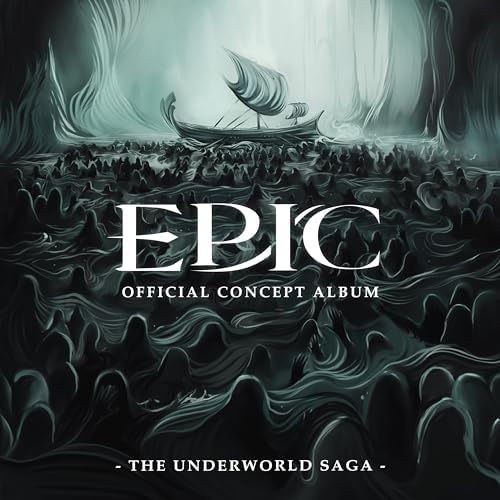

Descendus dans le monde souterrain, Ulysse et son équipage traversent les enfers et rencontrent les âmes de sa flotte tuée, y compris celle de son ami Polites, du nourrisson Astyanax, mais aussi d’Anticlée, la mère d'Ulysse qui découvre le décès de celle-ci alors qu’elle attendait fidèlement le retour de son fils (The Underworld).
Ulysse fini par rencontrer Tirésias le devin, qui lui annonce que bien qu'il ait une vision clairvoyante du passé et de l'avenir, il ne peut percevoir un avenir dans lequel Ulysse reviendrait indemne chez lui (No Longer You).
Affligé, Ulysse décide de renoncer à son côté miséricordieux, embrassant l'impitoyabilité et se préparant à rentrer chez lui par tous les moyens nécessaires, en écho avec la philosophie de Poséidon (Monster).